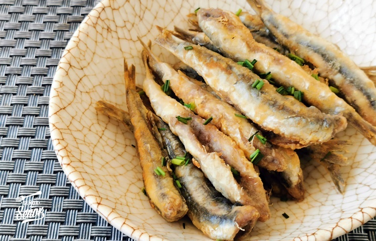

Ingredientes
- 500 g de boquerones frescos
- Harina de trigo para rebozar
- Aceite de oliva para freír
- Sal y limón (al gusto)

Boquerones fritos recién hechos
Elaboración
- Limpia los boquerones, quitando la cabeza, las tripas y la espina central. Lávalos bien y sécalos con papel de cocina.
- Sala al gusto los boquerones.
- Enharina los boquerones, sacudiendo el exceso de harina.
- Fríelos en abundante aceite caliente hasta que estén dorados y crujientes.
- Escúrrelos en papel absorbente para eliminar el exceso de aceite.
- Sírvelos calientes, acompañados de rodajas de limón o una ensalada.